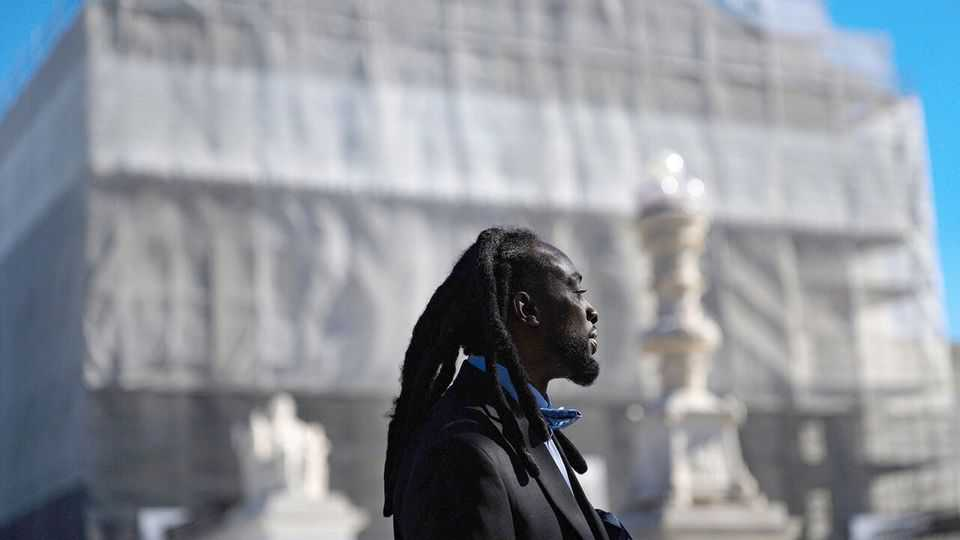

The Supreme Court is limiting plaintiffs’ ability to hold the powerful to account
Two rulings mark a subtle but important shift
June 25th 2026

As The Economist went to press on June 25th, the Supreme Court was due to deliver decisions with seismic potential. They involved, among other things, the question of who gets to be an American, the president’s power to sack leaders of independent agencies and whether states may bar transgender athletes from school sports. The court’s rulings will not just have legal weight but a political impact, as candidates exalt or lambast decisions in the run-up to the midterm elections in November. One decision, on mail-in ballots, has practical implications for administering the elections themselves.
Two days earlier, the court had issued rulings with a subtler effect. One concerned the rights of a Rastafarian to sue prison guards. Another tackled whether members of Falun Gong, a Chinese religious movement, could bring lawsuits in American courts for alleged violations of international law. Those rulings were not blockbusters. They are nonetheless part of an important shift in plaintiffs’ ability to hold the powerful to account.
The Nazarite vow, rooted in Numbers 6:5, requires that “the locks of the hair of [one’s] head” grow uncut. For Damon Landor, a Rastafarian, a two-decade commitment had led to dreadlocks that reached his knees. In 2020, wary of the grooming policies in Louisiana’s prison system, Mr Landor arrived at the Raymond Laborde Correctional Centre clutching a copy of Ware v Louisiana Department of Corrections, in which an appeals court ruled that a federal law protected Rastafarians’ right to keep their locks. But when Mr Landor showed the decision to prison guards, one threw it in the trash. Two others handcuffed him to a chair and shaved his head.
Mr Landor’s lawyers pointed out that the Religious Land Use and Institutionalised Persons Act (RLUIPA), passed in 2000, bars state and local governments from imposing a “substantial burden” on prisoners’ religious exercise, unless there is a compelling governmental interest. However in this case—Landor v Louisiana Department of Corrections—the argument centred not on whether prison officials had violated RLUIPA, but whether Mr Landor could seek damages for that violation. The court ruled, 6-3, that he could not. Nothing in RLUIPA, wrote Justice Neil Gorsuch, gave prison officials fair notice that they could be personally sued for damages.
Justice Ketanji Brown Jackson, writing for the three justices appointed by Democratic presidents, accused the majority of ignoring RLUIPA’s purpose. The point of the law, she wrote, is to give prisoners a way to vindicate their religious rights. By denying damages against the officers who seemed to flout the statute, prisoners were left “remediless”. Prison officials will have “little incentive to abide by federal law”, she added, “even if it is handed to them on a piece of paper”.
Steve Vladeck, a law professor at Georgetown University, agrees. Landor will “shut the door to damages in a large number of cases”, he says, making it impossible to sue over past violations, even if prisoners can still seek injunctions to stop ongoing ones. He reckons the decision will in effect “neuter statutes like RLUIPA”, when the government lacks the resources or will to enforce them itself.
A second 6-3 ruling issued on the 23rd moves to curtail plaintiffs’ ability to seek damages, too. In the early 2000s members of Falun Gong were allegedly tracked, arrested and tortured by the Chinese Communist Party. They say that Cisco Systems, an American technology company, provided the mass-surveillance system that facilitated the repression. (The company has called the allegations “inaccurate and entirely without foundation”.) The plaintiffs sued under the Alien Tort Statute (ATS), a law dating to 1789 that gives federal courts jurisdiction over suits by foreigners for violations of international law.
Writing for the majority, Justice Amy Coney Barrett noted that cases may “frequently involve heinous and inhumane acts”, but that the “political branches or other international actors”, not American courts, are better suited to help. Cisco also threw cold water on a separate claim under the Torture Victim Protection Act. In dissent, Justice Sonia Sotomayor accused the court’s majority of remaking the law “in its preferred image”. In both Cisco and Landor, the conservative majority insisted it was merely respecting the scope of laws passed by Congress.
To Mr Vladeck, the rulings fit a broader pattern since Justice Anthony Kennedy, a moderating force on the court, retired in 2018. The court ruled in 2020 that a Mexican teenager could not sue an American border-patrol agent who shot him near the border with Mexico. In 2022 an innkeeper unsuccessfully tried to hold an agent accountable for retaliating against him after a scuffle close on the Canadian border. In 2021 the court began making it harder to sue American companies for alleged abuses under the ATS. The rulings on June 23rd advance the same project—with more momentous decisions to come. ■
Stay on top of American politics with The US in brief, our daily newsletter with fast analysis of the most important political news, and Checks and Balance, a weekly note that examines the state of American democracy and the issues that matter to voters.